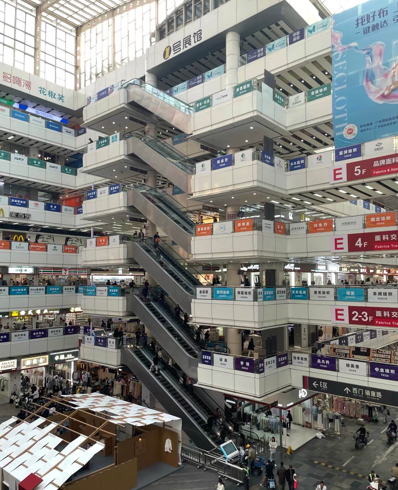

Blog
Practical Apparel Manufacturing Guides for Womenswear Brands
Production-focused articles for independent labels, wholesalers, distributors and retailers planning OEM, ODM, private label or custom womenswear production in China.
Article List
Repeat Production Stability for Growing Womenswear Brands
Why contemporary labels need stable fabric, fit, construction and quality control when best-selling womenswear styles move into repeat production.

Womenswear Manufacturer for Australian & Contemporary Fashion Brands
Small batch clothing production for linen, cotton, knitwear and design-led womenswear labels working with a China apparel factory.
Why Launching a Clothing Brand Feels Overwhelming, and How to Make Production Easier
A practical factory workflow for fashion founders managing design, fabric, MOQ, sampling, costing and delivery decisions.

Best Fabrics for Womenswear Production: How Brands Should Choose Materials
How to choose cotton, silk, wool, knit, recycled and blended fabrics based on hand feel, construction, MOQ and market expectations.

How to Source Garments Without Paying Middleman Fees
How overseas buyers can evaluate factory capability, clarify quotation details and reduce avoidable agency layers.
How to Find a Reliable Clothing Manufacturer in China
Use factory capability, sampling communication, product category fit and quality control process to evaluate suppliers.

OEM vs ODM Clothing Manufacturing: What Fashion Brands Should Know
Understand the difference between OEM and ODM clothing manufacturing before choosing a production model.

How Much Does Clothing Manufacturing Cost?
A concise guide to cost factors including fabric, trims, quantity, sampling, labor and quality requirements.

Private Label Clothing Manufacturer Guide for Fashion Brands
Plan labels, trims, packaging, sample review, MOQ and repeat-order communication before private label production.

Minimalist Fashion Manufacturing Guide
Translate capsule wardrobe, luxury basics, refined tailoring and quiet luxury references into factory requirements.

Contemporary Designer Womenswear Manufacturing Guide
Plan contemporary fashion, designer womenswear, artistic clothing and knitwear development more clearly for production.

Modern Tailoring Guide for Womenswear Brands
Develop tailored pants, wool trousers, contemporary outerwear and refined tailoring with clearer sample standards.

Capsule Wardrobe Collection Development Guide
Turn modern essentials, versatile dressing, neutral wardrobe planning and quiet luxury into stronger apparel development.

Related Resources
Use these links to explore the most relevant manufacturing services, product pages, and contact details on the site.